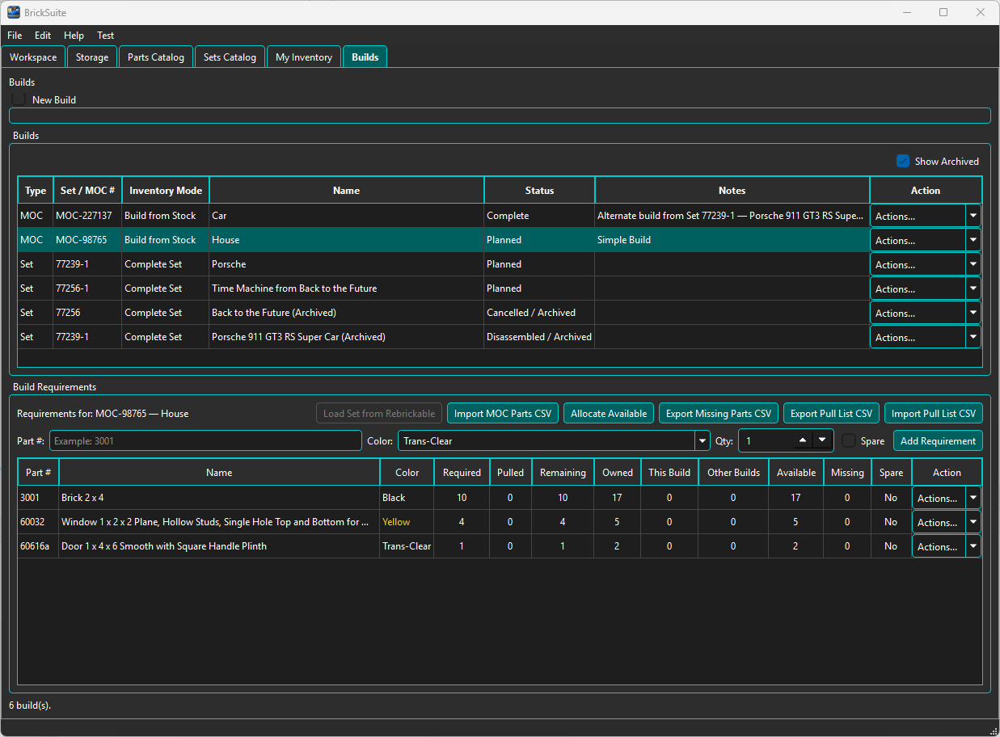
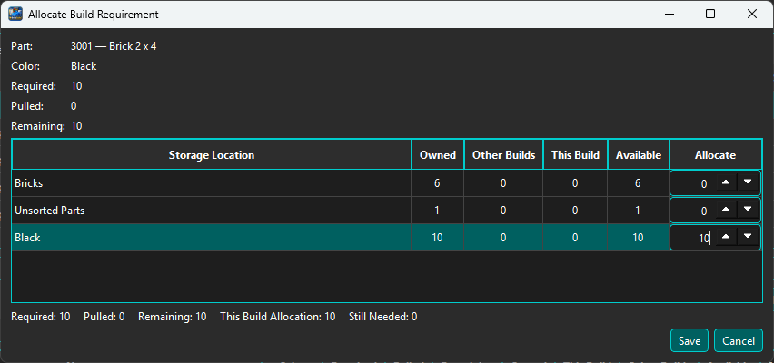

Allocation reserves matching loose inventory for a Build requirement. It answers the question: Which pieces in my Workspace are intended for this Build?
BrickSuite supports two ways to allocate inventory:
This small Build from Stock example contains three requirements before any allocation:

The House Build requires 10 Black 3001 bricks, 4 Yellow 60032 windows, and 1 Trans-Clear 60616a door. Before allocation, This Build is 0 for every row.
The important columns are:
For example, the Black 3001 requirement needs 10 pieces. BrickSuite owns 17 matching pieces, none are allocated to this or another Build, and all 17 are currently available.
Choose Allocate from a requirement row's Actions menu when you want direct control over which physical Storage location supplies the pieces.

The Allocate Build Requirement dialog breaks matching inventory down by Storage location. For the Black 3001 requirement, BrickSuite finds inventory in three locations:
The Build requires 10 pieces, so this example allocates all 10 from the Black Storage location. The summary at the bottom shows This Build Allocation: 10 and Still Needed: 0 before the allocation is saved.
Manual allocation is useful when the same part/color exists in several physical locations and you want to decide exactly where the Build should pull from.
After manually allocating all three requirements, the table shows:
The Missing quantity remains 0 because every requirement has enough matching inventory. Notice that Pulled is still 0. Nothing has physically left Storage yet.
For larger Builds, manually opening every requirement would be unnecessary work. Choose Allocate Available to have BrickSuite allocate matching loose inventory automatically where additional allocation is still needed.
In this example, every requirement was already fully allocated manually. Running Allocate Available therefore finds no additional loose inventory that needs to be allocated and leaves the existing allocations unchanged.
This demonstrates an important rule: Allocate Available supplements the current allocation state; it does not replace or disturb valid allocations that are already assigned to the Build.
For comparison, the larger Set example in Builds shows Allocate Available automatically allocating 231 pieces and fully satisfying 93 requirements.
The Other Builds column identifies matching loose inventory already reserved elsewhere. Those pieces are not treated as freely available to the selected Build. This prevents two Builds from independently assuming that the same physical piece is available to both.
The combination of Owned, This Build, Other Builds, and Available lets you see how shared Workspace inventory is committed before physically pulling anything.
When enough inventory is available, a requirement can be fully allocated. When only some of the required quantity is available, BrickSuite can allocate what is available while the remaining shortage stays visible. If no matching inventory is available, the requirement remains unallocated and its shortage is reflected in the Build state.
Use Missing Parts when shortages must be acquired before the Build can proceed.
Allocation does not mean the pieces have been removed from their bins, drawers, or shelves. The physical workflow occurs later:
Allocate | Export Pull List | Physically find and pull pieces | Record actual Pulled quantities | Import Pull List | Preview and Reconcile | Loose inventory and Build state are updated
This separation is intentional. BrickSuite can reserve what the database says should be available, while the pull-list reconciliation records what was actually found and removed in the physical workshop.
Use manual allocation when Storage-location choice matters or when you want to inspect a specific requirement closely. Use Allocate Available when you want BrickSuite to process many requirements efficiently.
Both methods use the same allocation model and can be used together on the same Build.
Allocation is tied to the exact Build requirement, not merely a matching Part/Color pair. If a requirement has a deliberate substitution, its effective Part and Color govern fulfillment while the original logical requirement remains visible. Continue with interactive pulling or pull-list reconciliation in Builds.